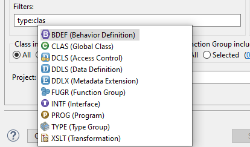

The Code Search Dialog Page is structured into the following
main sections
Search Pattern (mandatory)
Object Selection
Additional Settings
Search Pattern
In the text area you can enter the search pattern. It can
contain one or more patterns. In case of multiple patterns, each
pattern has to be entered in a separate line. Additionally you have 2
options to configure the search pattern
Ignore Case When this option is set the
lower/upper case of the source code will be ignored
Regular Expressions By setting this
checkbox you specify that the entered pattern uses regular
expressions
Object Selection
The object selection can be defined using 2 fields:
Object Name A text input control to enter
one or multiple object names to restrict the scope. Wildcards are
supported. The end of each object name is automatically expanded by a
* if it does not end with <. Multiple object names are split by a space
Filters A text control for entering the
filters which will restrict the scope. This field provides assistance
for the following criteria:
type
owner
package
application component
date of creation
All filters also provide further content assistance to see which
options are available (see the following image)

Figure 2: Content Assist for options for a filter
TIP The filter control can also be used to
exclude objects from the scope by using ! as the negation sign. e.g.
You can exclude objects of type class by using by using
type: !clas
A more detailed configuration of the scope objects is possible for
classes and function groups because these objects contain different
includes. By default all includes associated with classes and function
groups will be scanned during the search. You can explicitly specify
which includes should be scanned clicking on the link behind the Selected
radio button.
Figure 3: Content Assist for options for a filter
Additional Settings
Additionally you have the following options to configure the behavior
of the search
Ignore Comment Lines If active the system
will not search for the entered pattern in commented lines
Multiline Search By setting this checkbox
you specify that each source code object will be searched as a whole.
That way it is possible to find patterns that span multiple lines. If
the checkbox is not set the system will search only for matches which
contain the pattern in a single line.
Single Pattern mode As a default the
search result will contain the source code files which contain at
least on line from the search pattern. By setting this checkbox means
that the whole content of the search pattern text area is considered
as one pattern (relevant for multiline pattern). Further
configuration setting for this option is available in the General
Settings
Match All This checkbox is only relevant
if the pattern contains more than one line. If this checkbox is set
the system will search for source code files which contains all
patterns listed in the search pattern text area without
considering their order. If this checkbox is not set the system will
execute an OR search between all lines of the pattern individually
Sequential Matching Checkbox is only
relevant if the pattern contains more than one line. If this checkbox
is set the system will search for source code files which contain all
patterns listed in the search pattern text area considering
their order. If this checkbox is not set the system will
execute an OR search between all lines of the pattern individually